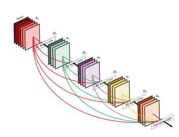
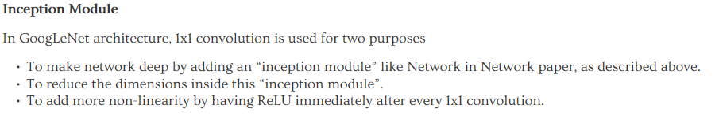

『Xu』Densely Connected Convolutional Networks / Unit Convolution Kernel
DenseCNN

一句话来介绍就是每一层的feature map都是由之前每一层输出的feature map concentrate得到的，所以可以认为最后一层feature map explicitly包含了之前所有层的feature map，因此对最后一层feature map包含了很多前面的information。作者认为这样的结构能够更有利于information的传播，同时类似于ResNet，由于能够直接的将浅层的feature向后传播，这样也能防止梯度消失。
相比于ResNet， DenseCNN使用了concentrate来代替sum，能够更加explicitly传递信息。同时由于dense connection使得每一层都包含了大量的信息，整个网络信息传递也变得十分有效，因此整个网络会更加浅，在很浅的网络中也能学到大量的信息。
单位卷积核
单位卷积核最早是在Network In Network[1]中被提出来的，然后在GoogLeNet[2]中的一个重要模块Inception Module中被使用。

- 从原文中可以知道，单位卷积核能够对特征图进行降维(当然也可以升维)，可以比较直接的调整特征图的维度。在论文中提出的Inception Module中，使用单位卷积核是为了降低通道数，从而减少参数量。比如，上一层的输出为100x100x128，经过具有256个通道的5x5卷积层之后(stride=1，pad=2)，输出数据为100x100x256，其中，卷积层的参数为128x5x5x256= 819200。而假如上一层输出先经过具有32个通道的1x1卷积层，再经过具有256个输出的5x5卷积层，那么输出数据仍为为100x100x256，但卷积参数量已经减少为128x1x1x32 + 32x5x5x256= 204800，大约减少了4倍。
- 可以增加神经网络的非线性效果，即可以在单位卷积核后面加上激活函数(例如ReLU)，使得神经网络的表达效果更好。
- 可以进一步对特征图的多个通道之间的信息进行融合提取，提取出更鲁邦的特征，实现通道信息交互。
在ResNet中，单位卷积核就已经被使用了，它是作为一个「Bottleneck」被引入地，通过这个「Bottleneck」，输入数据地维数先被减少，然后使得一个比较大的卷积核能够在比较小的维度上进行操作，然后再利用「Bottleneck」单位卷积核将减小的维度重新放大到原来的样子。从而能够在处理更加大的维度的特征的同时，保持一个比较小的计算时间。
Reference
[1]. Lin, Min, Qiang Chen, and Shuicheng Yan. “Network in network.” arXiv preprint arXiv:1312.4400 (2013).
[2]. Szegedy, Christian, et al. “Going deeper with convolutions.” Proceedings of the IEEE conference on computer vision and pattern recognition. 2015.